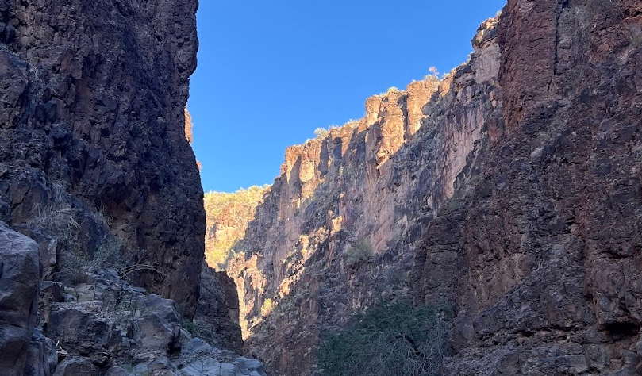
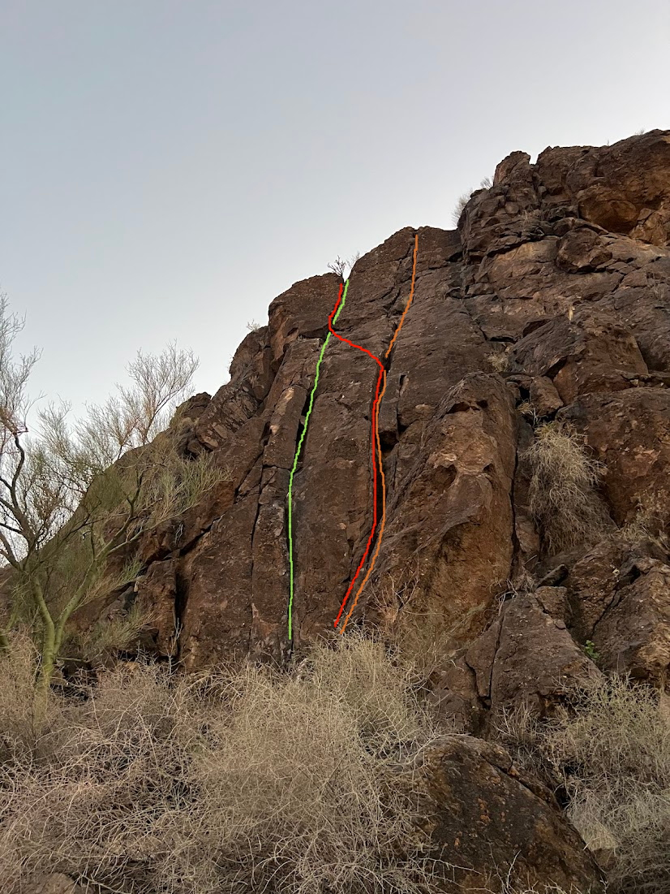
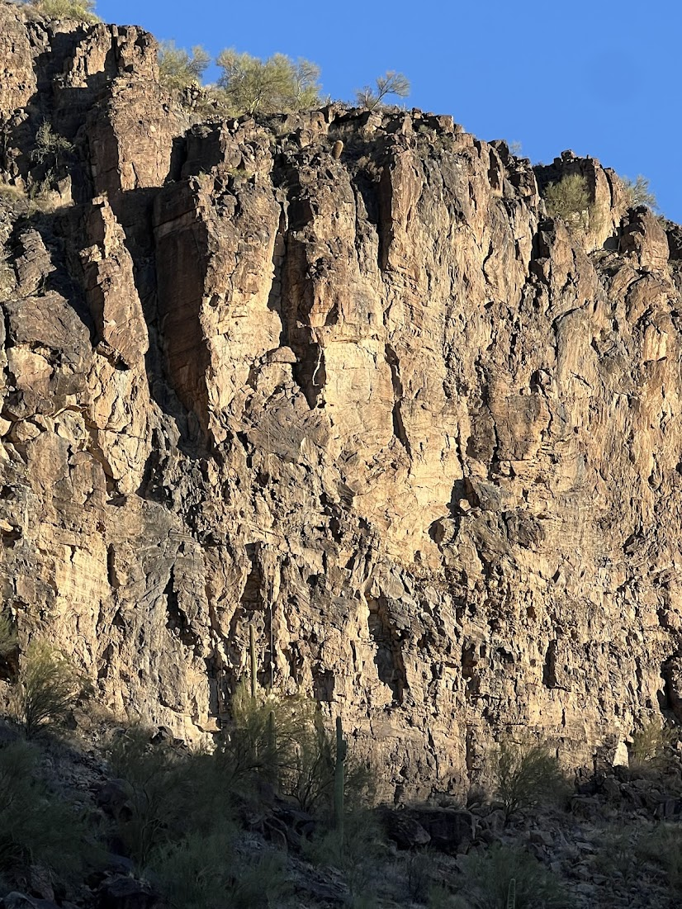
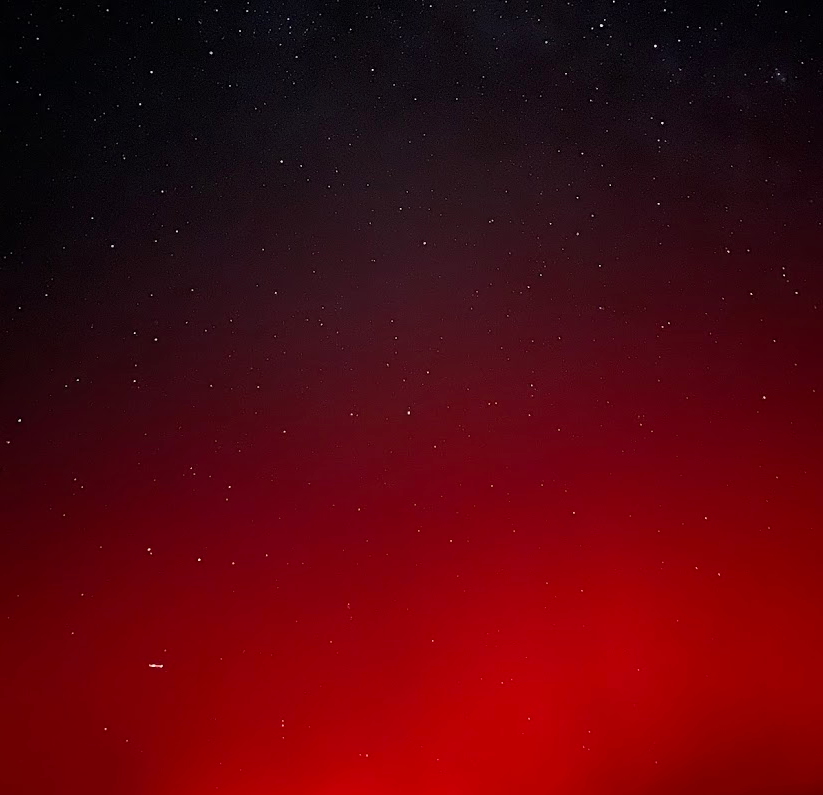
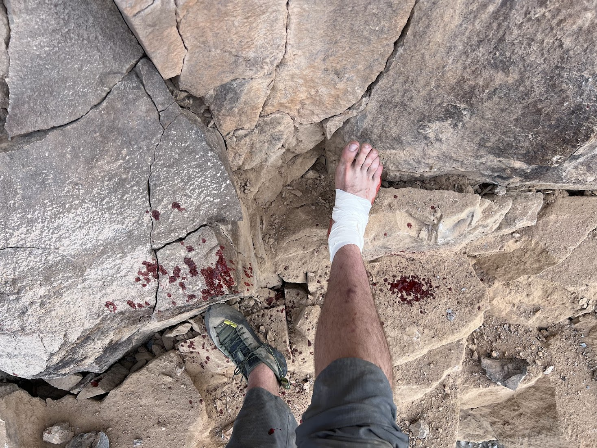
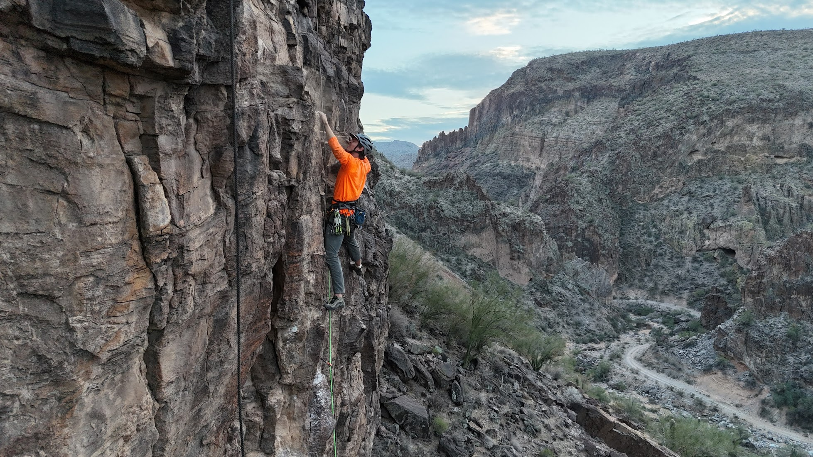

Burro Creek
November 2025 · Arizona
← Back to Trip ReportsDay 1

Steven and I departed Phoenix and made our way out into the middle of nowhere, Arizona. We had lofty goals and were excited to spend the week working on the wall developing new climbing routes. Steven was going to be living out of his van for the week, and I was going to be in a large tent. After setting up on BLM land just off the highway, we still had a bit of daylight so we set out to what Steven called the Slot Canyon to fix some lines we could easily ascend later in the week. Our goal was to set up the infrastructure to quickly get to higher routes in the coming days. Steven put a trad line up to get to the base of the good rock and fixed a line we could use to easily access rock up above. I followed the unnamed route and gathered his equipment. We rappelled off the fixed line to get down just as the sun was setting. This was a great introduction to ground-up ascents and a reminder of how delicate climbing awareness is to maintaining safety. Unfortunately, the fixed line was not much use to us — the rock above needed to be accessed by hiking around the top and rappelling in.
Day 2

On the first full day of the trip, Sarah was with us so we spent most of the day climbing. Steven showed us around Burro Wall and we eventually worked our way around to Paul's Wall for my first ground-up FA. On the left side, two wider cracks captured our attention. I picked a line that used both cracks and avoided several larger, microwave-sized blocks. After leading and building an anchor, Steven followed on a top-rope and cleaned rocks on his way up. Once no rope was below, we were free to push loose rock off the route — making any repeat ascents far safer. When Steven reached my trad anchor, he installed two bolts for a permanent anchor and we lowered off, cleaning more on the way down.
Day 3

On the second full day at Burro Wall, Steven and I noticed some prominent features a little ways right on a much taller section of the cliff. Since the fixed line from day one didn't give us much of a leg up, we decided to pursue this taller wall. Steven already had some access anchors at the top we could lower in from. As we descended, the stoke built — I spotted a beautiful line up into a shallow dihedral and over a bulge to what would become my anchor location. The upper section was striking enough to make the messy lower section worth cleaning.
Day 4

Spent most of the day cleaning our routes and deciding where to place bolts to guide future climbers. A red aurora presented itself to us that night.
Day 5

Another full day of cleaning, joined by David Sampson — a prolific developer with over 800 FAs across the country. As exhaustion set in, I was hammering a stubborn rock about a foot above and two feet right of my ankle. I slammed the hammer in and a baseball-sized chunk cracked off directly into the outside of my right ankle. Blood poured immediately. Fortunately Steven was above me on his route with tape on hand — he swung over and handed it down. I taped the wound thoroughly and got back to work. Only when I touched down to the ground at the end of the day did I realize the severity: a likely bone bruise from the blunt impact. Nothing broken, but loading the ankle on uneven ground was painful. Extremely fortunate it wasn't worse. The hike out involved roughly 15 minutes of scrambling followed by a flat walk up a dry river wash.
Day 6

Started slowly. Foot was extremely tender and I needed rest. Steven and David put up a new route in the Slot Canyon while I read most of the day.
Day 7

Another full day of cleaning. At the very end of the day, Steven and I completed our routes and stood on top of genuine first ascents. My route, Blood Moon, came in at 5.10. Steven's, Vermin Excursion, was a harder 11+/12a. After days of clearing choss, it felt incredible.
Day 8

A half day of climbing cut short by rain. We drove back to Phoenix for my flight the next morning. The image above shows both of our completed lines on the wall.